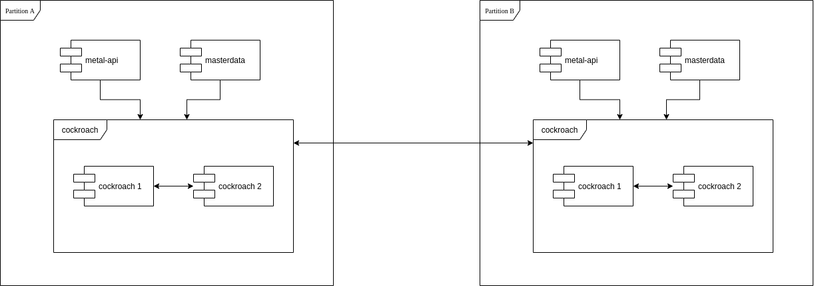
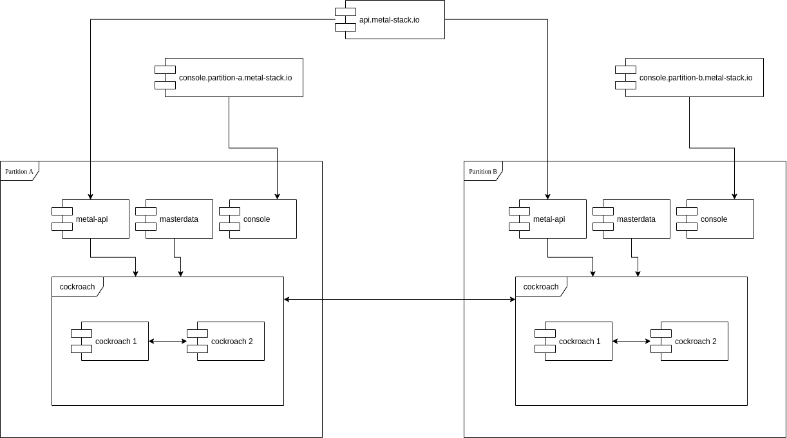
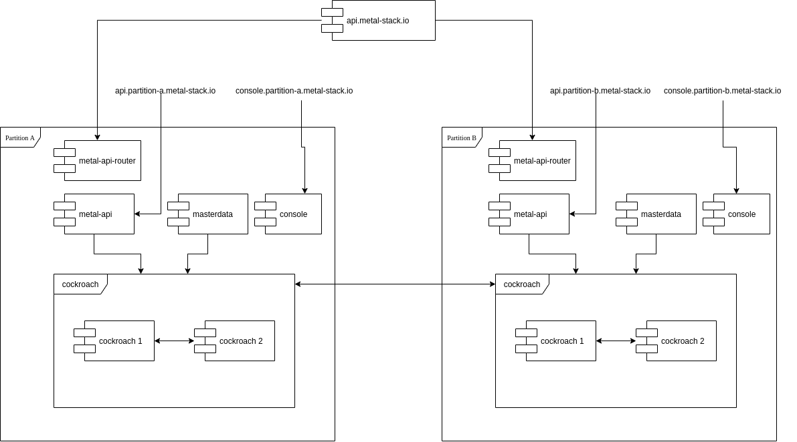
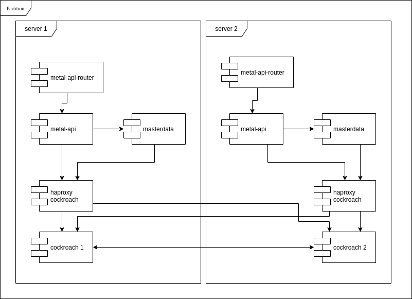

Distributed Metal Control Plane
Problem Statement
We face the situation that we argue for running bare metal on premise because this way the customers can control where and how their software and data are processed and stored. On the other hand, we have currently decided that our metal-api control plane components run on a kubernetes cluster (in our case on a cluster provided by one of the available hyperscalers).
Running the control plane on Kubernetes has the following benefits:
- Ease of deployment
- Get most, if not all, of the required infrastructure services like (probably incomplete):
- IPs
- DNS
- L7-Loadbalancing
- Storage
- S3 Backup
- High Availability
Using a kubernetes as a service offering from one of the hyperscalers, enables us to focus on using kubernetes instead of maintaining it as well.
Goal
It would be much saner if metal-stack has no, or only minimal dependencies to external services. Imagine a metal-stack deployment in a plant, it would be optimal if we only have to deliver a single rack with servers and networking gear installed and wired, plug that rack to the power supply and a internet uplink and its ready to go.
Have a second plant which you want to be part of all your plants? Just tell both that they are part of something bigger and metal-api knows of two partitions.
Possible Solutions
We can think of two different solutions to this vision:
- Keep the central control plane approach and require some sort of kubernetes deployment accessible from the internet. This has the downside that the user must, provide a managed kubernetes deployment in his own datacenter or uses a hyperscaler. Still not optimal.
- Install the metal-api and all its dependencies in every partition, replicate or shard the databases to every connected partition, make them know each other. Connect the partitions over the internet with some sort of vpn to make the services visible to each other.
As we can see, the first approach does not really address the problem, therefore i will describe solution #2 in more details.
Central/Current setup
Stateful services
Every distributed system suffer from handling state in a scalable, fast and correct way. To start how to cope with the state, we first must identify which state can be seen as partition local only and which state must be synchronous for read, and synchronous for writes across partitions.
Affected states:
- masterdata: e.g. tenant and project must be present in every partition, but these are entities which are read often but updates are rare. A write can therefore be visible with a decent delay in a distinct partition with no consequences.
- ipam: the prefixes and ip´s allocated from machines. These entities are also read often and rare updates. But we must differentiate between dirty reads for different types. A machine network is partition local, ips acquired from such a network must by synchronous in the same partition. Ips acquired from global networks such as internet must by synchronous for all partitions, as otherwise a internet ip could be acquired twice.
- vrf ids: they must only be unique in one partition
- image and size configurations: read often, written seldom, so no high requirements on the storage of these entities.
- images: os images are already replicated from a central s3 storage to a per partition s3 service. metal-hammer kernel and initrd are small and pull always from the central s3, can be done similar to os images.
- machine and machine allocation: must be only synchronous in the partition
- switch: must be only synchronous in the partition
- nsq messages: do not need to cross partition boundaries. No need to keep the messages persistent, even the opposite is true, we don't want to have the messages persist for a longer period.
Now we can see that the most critical state to held and synchronize are the IPAM data, because these entities must be guaranteed to be synchronously updated, while being updated frequently.
Datastores:
We use three different types of datastores to persist the states of the metal application.
- rethinkdb is the main datastore for almost all entities managed by metal-api
- postgresql is used for masterdata and ipam data.
- nsq uses disk and memory tho store the messages.
Stateless services
These are the easy part, all of our services which are stateless can be scaled up and down without any impact on functionality. Even the stateful services like masterdata and metal-api rely fully on the underlying datastore and can therefore also be scaled up and down to meet scalability requirements.
Albeit, most of these services need to be placed behind a loadbalancer which does the L4/L7 balancing across the started/available replicas of the service for the clients talking to it. This is actually provided by kubernetes with either service type loadbalancer or type clusterip.
One exception is the metal-console service which must have the partition in it´s dns name now, because there is no direct network connectivity between the management networks of the partitions. See "Network Setup)
Distributed setup
State
In order to replicate certain data which must be available across all partitions we can use on of the existing open source databases which enable such kind of setup. There are a few avaible out there, the following uncomplete list will highlight the pro´s and cons of each.
RethinkDB
We already store most of our data in RethinkDB and it gives already the ability to synchronize the data in a distributed manner with different guarantees for consistency and latency. This is described here: Scaling, Sharding and replication. But because rethinkdb has a rough history and unsure future with the last release took more than a year, we in the team already thought that we eventually must move away from rethinkdb in the future.
Postgresql
Postgres does not have a multi datacenter with replication in both directions, it just can make the remote instance store the same data.
CockroachDB
Is a Postgresql compatible database enginge on the wire. CockroachDB gives you both, ACID and geo replication with writes allowed from all connected members. It is even possible to configure Follow the Workload and Geo Partitioning and Replication.
If we migrate all metal-api entities to be stored the same way we store masterdata, we could use cockroachdb to store all metal entities in one ore more databases spread across all partitions and still ensure consistency and high availability.
A simple setup how this would look like is shown here.

go-ipam was modified in a example PR here: https://github.com/metal-pod/go-ipam/pull/17
API Access
In order to make the metal-api accessible for api users like cloud-api or metalctl as easy at it is today, some effort has to be taken. One possible approach would be to use a external loadbalancer which spread the requests evenly to all metal-api endpoints in all partitions. Because all data are accessible from all partitions, a api request going to partition A with a request to create a machine in partition B, will still work. If on the other hand partition B is not in a connected state because the interconnection between both partitions is broken, then of course the request will fail.
IMPORTANT The NSQ Message to inform metal-core must end in the correct partition
To provide such a external loadbalancer we have several opportunities:
- Cloudflare or comparable CDN service.
- BGP Anycast from every partition
Another setup would place a small gateway behind the metal-api address, which forwards to the metal-api in the partition where the request must be executed. This gateway, metal-api-router must inspect the payload, extract the desired partition, and forward the request without any modifications to the metal-api endpoint in this partition. This can be done for all requests, or if we want to optimize, only for write accesses.
Network setup
In order to have the impact to the overall security concept as minimal as possible i would not modify the current network setup. The only modifications which has to be made are:
- Allow https ingress traffic to all metal-api instances.
- Allow ssh ingress traffic to all metal-console instances.
- Allow CockroachDB Replication between all partitions.
- No NSQ traffic from outside required anymore, except we cant solve the topic above.
A simple setup how this would look like is shown here, this does not work though because of the forementioned NSQ issue.

Therefore we need the metal-api-router:

Deployment
The deployment of our components will substantially differ in a partition compared to a the deployment we have actually. Deploying it in kubernetes in the partition would be very difficult to achieve because we have no sane way to deploy kubernetes on physical machines without a underlying API. I would therefore suggest to deploy our components in the same way we do that for the services running on the management server. Use systemd to start docker containers.
